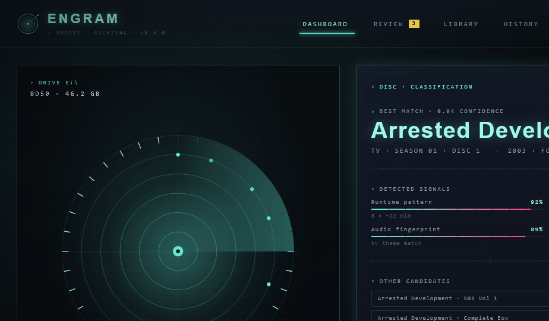
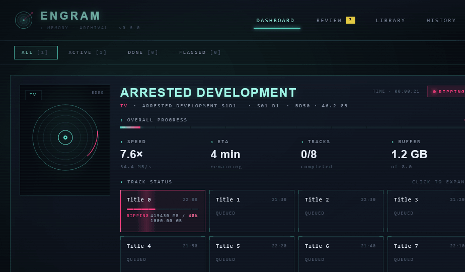
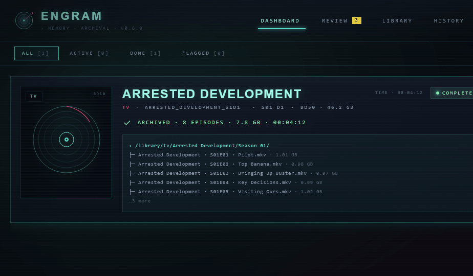
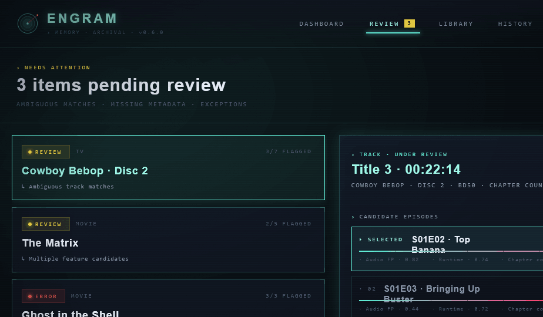
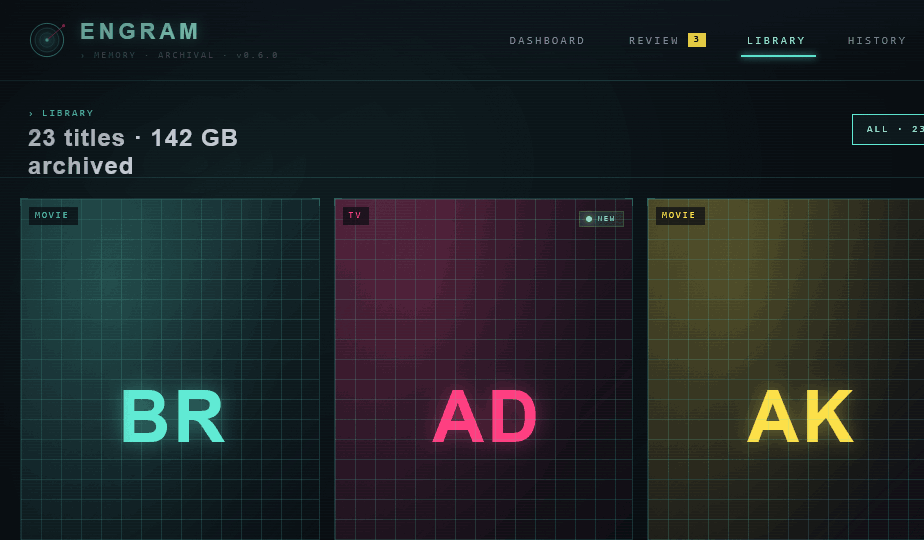
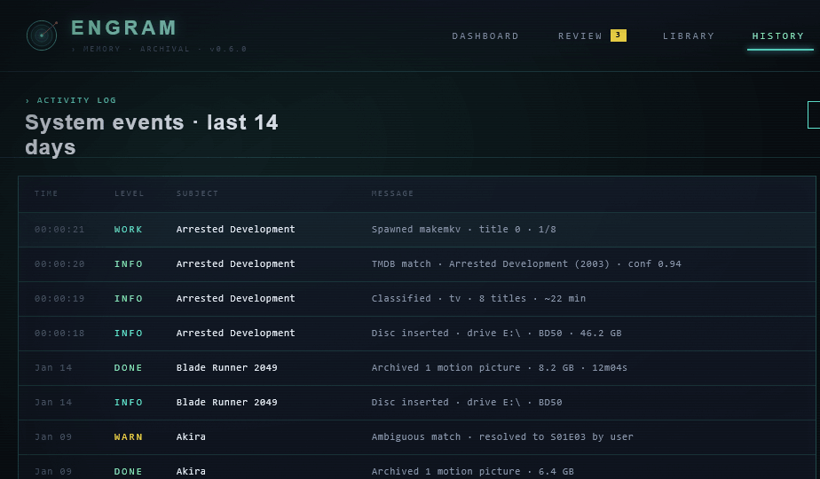
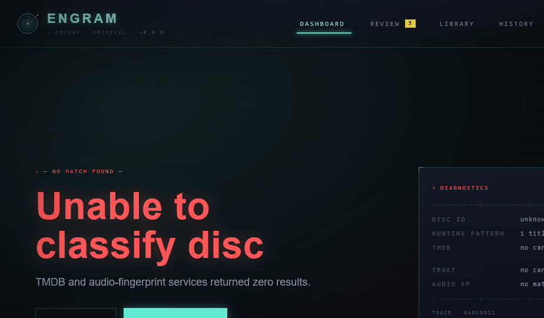

Handoff: Engram — Synapse UI Refresh
See also: The brand system itself (mark geometry, wordmark, lockups, app icons, favicon, splash, full icon set) is documented in a separate handoff at
docs/design_handoff_brand/. This document covers the screen-level UI direction (dashboard, review queue, library, history). The two are complementary — implementation guidance for developers is atdocs/development/brand.md.
Overview
Full UI refresh for Engram, a disc ripping & media organization tool that automates the workflow from disc insertion → ripping → metadata matching → archive. This handoff covers the Synapse v2 direction: a Neo-Tokyo / Blade Runner cyberpunk aesthetic — deep blue-black canvas, cyan + magenta accents, Chakra Petch + JetBrains Mono, with light atmospheric chrome (scanlines, distant skyline, scrolling telemetry).
The design is medium-density (the production target). Min/dense variants and color-balance toggles exist in the prototype but are exploratory; ship density: 'med' and colorBalance: 'balanced' (cyan-primary, magenta-secondary) as defaults.
About the Design Files
The files in this bundle are design references created in HTML — interactive prototypes showing the intended look and behavior. They are not production code to copy directly. The task is to recreate these designs in Engram's existing frontend codebase (React + TypeScript + Vite, see frontend/) using the existing patterns, component library, and state stores. Lift exact tokens, typography, spacing, and interaction details from the prototype, but implement them as proper TypeScript React components in frontend/src.
Screen previews
Reference renders of each artboard at 1280×820 (medium density, balanced color, scanlines + skyline on):
1. Disc insert / classification

2. Dashboard — ripping

2b. Dashboard — complete

3. Review queue

4. Library

5. History

6. Error — no match

Each PNG is the screen rendered standalone at the production target size; open the HTML prototype for hover, animation, and the disc-phase / state transitions.
Fidelity
High-fidelity. Colors, typography, spacing, and most interactions are final. The bar/grid charts, scanline overlay, skyline silhouette, and animated radar sweep are intentional and should be reproduced. Recreate pixel-accurately.
Files in this bundle
Engram Synapse v2.html— entry point. Loads React via CDN + Babel and mounts the canvas.design-canvas.jsx— (presentation only) Pan/zoom canvas hosting all 6 artboards. Not part of the production UI.tweaks-panel.jsx— (presentation only) the in-prototype Tweaks panel. Not part of the production UI.shared.jsx— small dataset shared with sibling directions (titles, tracks, sample state). Useful as a fixture reference.synapse-v2/data.jsx— extended sample data for Library, Review queue, History, candidate matching.synapse-v2/core.jsx— design tokens, primitives, and atmosphere. Read this first.synapse-v2/shell.jsx— top bar (logo, nav, status pill) + bottom status bar.synapse-v2/dashboard.jsx— main dashboard (job header, drive panel, track grid, byte progress, log feed).synapse-v2/screens.jsx— disc-insert/classification, review queue, library, history, error states.synapse-v2/app-v2.jsx— composes the artboards + tweaks panel; not needed in production.
To run the prototype locally: open Engram Synapse v2.html in any modern browser.
Design tokens (from synapse-v2/core.jsx, the sv object)
Color
| Token | Hex | Use |
|---|---|---|
bg0 |
#05070c |
Page bg, deepest layer |
bg1 |
#0a0e18 |
Card bg layer 1 |
bg2 |
#121827 |
Card bg layer 2 (panels) |
bg3 |
#1a2234 |
Bg layer 3 (hover, active row) |
ink |
#e6ecf5 |
Primary text |
inkDim |
#8893a8 |
Secondary text, labels |
inkFaint |
#4a5369 |
Tertiary text, ticks |
inkGhost |
#2a3147 |
Disabled, separators on dark |
cyan |
#5eead4 |
Primary accent (active, success, primary action) |
cyanHi |
#9ff8e8 |
Hover/glow on cyan |
cyanDim |
#2dd4bf |
Cyan at lower emphasis |
magenta |
#ff3d7f |
Secondary accent (ripping, in-progress, magenta-forward color balance) |
magentaHi |
#ff7aa5 |
Hover on magenta |
magentaDim |
#d63171 |
|
yellow |
#fde047 |
Notification badges, scanning state |
amber |
#fcd34d |
Matching state |
green |
#86efac |
Complete / live status |
greenDim |
#4ade80 |
|
red |
#ff5555 |
Errors |
purple |
#a78bfa |
Reserved (unused currently) |
Lines / borders (cyan at varying alpha — gives the screen its tint)
line—rgba(94,234,212,0.14)— default 1px borderslineMid—rgba(94,234,212,0.24)— section dividerslineHi—rgba(94,234,212,0.42)— corner ticks, focused state
Typography
| Token | Stack |
|---|---|
mono |
"JetBrains Mono", ui-monospace, monospace |
sans |
"Chakra Petch", "Space Grotesk", sans-serif |
display |
"Chakra Petch", sans-serif |
Load from Google Fonts:
JetBrains+Mono:wght@300;400;500;600;700
Chakra+Petch:wght@400;500;600;700
Space+Grotesk:wght@400;500;600;700
Type scale (medium density)
| Use | Family | Size | Weight | Letter-spacing | Notes |
|---|---|---|---|---|---|
| Big numeric (progress %) | display | 56–96px | 700 | 0.04em | Use cyan with text-shadow: 0 0 24px <cyan>55 |
| Section title | display | 24–30px | 700 | 0.04em | |
| Card title | display | 18–22px | 600 | 0.04em | |
| Body | sans | 14–16px | 400 | normal | |
| Mono numbers (sizes, IDs) | mono | 11–14px | 400–500 | 0.06–0.10em | |
| Label (› UPPERCASE) | mono | 10–11px | 400 | 0.20em | Always uppercase, prefixed with › caret |
| Tiny tag | mono | 9–10px | 400 | 0.22em |
Spacing (medium density, from useDensity())
pad: 22(outer page padding)gap: 14(default flex gap)cardPad: 14rowHeight: 40headerPad: 18- Top bar padding:
18px 28px - Status bar padding:
8px 20px - Section divider gap:
28px
Borders, corners, glow
- 1px solid borders, color from line tokens (mostly
lineMidfor panels) - Corner ticks are signature — every panel gets 8px L-shaped tick marks at all 4 corners (
SvCorners). Implement as 4 absolutely-positioned divs with 1.5px borders. - Cards do not use border-radius. Sharp 90° corners throughout.
- Glow:
box-shadow: 0 0 24px <accent>22, inset 0 0 32px rgba(94,234,212,0.03)for emphasized panels - Active/primary buttons:
box-shadow: 0 0 14px <accent>55
Atmosphere overlays
- Ambient haze — two large radial gradients in the bg layer (cyan top-left, magenta bottom-right at ~7-10% alpha)
- Scanlines —
repeating-linear-gradient(0deg, rgba(94,234,212,0.05) 0 1px, transparent 1px 3px)atopacity: 0.35. User-toggleable in Settings. - SVG grain —
feTurbulence baseFrequency="0.85"atopacity: 0.08, mix-blend-mode: overlay - Vignette — radial gradient transparent →
rgba(0,0,0,0.5)at corners - Distant skyline — bottom 180px SVG silhouette with cyan/magenta window-light flickers. Toggleable.
Screens
There are 6 screens. Routes are dashboard, review, library, history. Disc-insert is a state of dashboard. Errors are full-screen takeovers within dashboard.
Shell — Top bar + Status bar (shell.jsx)
Top bar (always present): 76px tall, bottom-bordered with sv.line.
- Left: 38px logo mark (SvMark — concentric rings + axon), wordmark "ENGRAM" 22px Chakra Petch 700, letter-spacing: 0.18em, color cyanHi, text-shadow: 0 0 12px <cyan>55. Subline: › MEMORY · ARCHIVAL · v0.6.0 9px mono, 0.24em, inkFaint.
- Center: nav (DASHBOARD | REVIEW [3] | LIBRARY | HISTORY). Active item gets a 2px underline at cyan with glow. Yellow badge for unread Review count.
- Right: green LIVE pill (animated dot), settings cog button.
Status bar (always present): 36px tall, top-bordered.
- Left: ● 1 ACTIVE, ● 0 ARCHIVED, DRIVE E: READY
- Center: scrolling telemetry strip (SvTelemetryBand) — horizontal infinite scroll of strings like UNIT 07, WS·CONNECTED, BUFFER 1.2/8.0 GB, THERMAL NOMINAL. Use a CSS @keyframes svScroll translating from 0 to -50% over ~100s, with a side mask gradient for fade-in/out.
- Right: WS · CONNECTED, version pill.
1. Disc insert / classification (SvDiscInsert, screens.jsx)
Two-column grid (1fr 1.2fr).
Left — animated disc panel. Bordered panel with corner ticks. Centered SVG (400×400):
- 6 concentric rings at radii 30/60/90/120/150/180, cyan at 0.2–0.6 opacity
- Crosshair lines (vertical+horizontal) at 0.3 opacity
- During scan/classify: rotating sweep wedge — <path d="M 200 200 L 380 200 A 180 180 0 0 0 200 20 Z" fill="url(#sweep)"> inside a <g style="transform-origin: 200px 200px; animation: svSpin 3s linear infinite">
- Center hub: 8px filled cyan circle + 3px bg cutout
- 36 chapter ticks on the outer ring, lit cyan as the phase progresses
- During classify/ready: 8 pulsing dots at the 150-radius mark for detected titles
- Top-left overlay: drive label + capacity (Drive E:\ / BD50 · 46.2 GB)
- Bottom: 4-step phase breadcrumb (DETECT/SCAN/CLASSIFY/READY) with top-border highlight
Right — classification panel.
- Header: › Disc · classification label + ANALYZING scanning badge
- Best match block: yellow label "Best match · 0.94 confidence", title in 38px display 700 cyan with text-shadow: 0 0 18px <cyan>55, then mono meta line TV · SEASON 01 · DISC 1 · 2003 · FOX · TMDB #4589
- "Detected signals" 2-col grid: Runtime pattern, Volume label, Audio fingerprint, Chapter markers — each shows label/confidence percent + 2px bar + value text
- "Other candidates" list — 3 alternative matches with confidence percent
- Footer actions: EJECT (ghost), EDIT · MANUAL (ghost), CONFIRM · BEGIN RIP (cyan filled, primary)
2. Dashboard (SvDashboard, dashboard.jsx)
Three states: ripping, matching, complete. All share the same chrome; the body region swaps.
Job header strip (top of body): - Left: badge for current state, then job title in 30px display 700, then mono meta row (BD50 · 46.2 GB · DRIVE E:) - Right: live elapsed timer (mono 14px), runtime estimate
Body grid (medium density: 1.4fr 1fr):
Left — track grid (SvTrackGrid):
- 8 cards in a 4-col grid (or 3 on min, 6 on dense)
- Each card: corner ticks, type badge (FEATURE/EPISODE/EXTRA), title + chapter count, runtime, byte progress bar (per-track), state badge
- Hover: lift 2px, border to cyan, glow shadow 0 8px 24px <cyan>33
- Active track (currently ripping): magenta border, magenta RIPPING badge with pulsing dot, animated bar with sweep highlight
Right — side rail (vertical stack):
- Big numeric: aggregate progress percent in 64px+ display, cyan with glow
- Byte progress: filled bar, MB ripped / total, MB/s readout
- Mini chart: throughput sparkline (last 60s), SvBarChart
- Activity log: last 6 events streamed in (SV_HISTORY style), terminal-styled with timestamp/tag/message
3. Review queue (SvReviewQueue, screens.jsx)
Header strip with yellow Needs attention label, big number + headline, filter/sort pills.
Two-column body (1.1fr 1.4fr):
- Left — queue list: stacked cards from SV_REVIEW_QUEUE. Each card: state badge (REVIEW/ERROR), type, flagged ratio, title, "↳ {need}" subline. Active card has cyan border + glow.
- Right — detail / candidate picker: track header (Title 3 · 00:22:14 · CHAPTER COUNT 8) + warn badge. Then Candidate episodes list — clickable rows from SV_CANDIDATES, each showing match score, score bar, source breakdown (Audio FP · 0.82, Runtime · 0.74, Chapter count · 0.78). Selected row gets ▸ SELECTED marker + cyan border. Footer: SKIP · LATER / MARK UNMATCHED / CONFIRM MATCH (cyan primary).
4. Library (SvLibrary, screens.jsx)
Header strip with Library label, "23 titles · 142 GB archived", filter pills (ALL · 23 / MOVIES · 15 / TV · 8 / UHD · 4).
Body:
- Poster grid — 4 cols (med) / 6 cols (dense). Each card has 2:3 aspect-ratio poster panel with big colored letters (BR / AD / AK etc.), grid overlay, type pill, NEW badge for added: 'just now'. Below: title, subtitle, year, size in mono. Hover lifts and glows.
- Add card — dashed border, big + button, Insert disc to add label
- Below grid: recent archives table — 5-col grid (date / title / year / quality / size) with bottom-border rows, all mono.
5. History (SvHistory, screens.jsx)
Header strip with Activity log label + filter pills (ALL/INFO/WARN/ERROR/DONE).
Body grid (1fr 320px):
- Left — log stream: panel with 4-col header (TIME/LEVEL/SUBJECT/MESSAGE) + rows from SV_HISTORY. Most-recent row tinted cyan. Time mono, level color-coded (green/yellow/cyan/red), subject in ink, message in inkDim — all monospaced.
- Right — stats rail: stacked panels.
- Last 14 days: 2x2 stat grid (Archived/Volume/Matched/Flagged)
- Throughput: 14-day bar chart (SvBarChart)
- Distribution: Movies (15) cyan bar, TV seasons (8) magenta bar
6. Error / empty states (SvErrorState, screens.jsx)
Three variants: no-match, no-drive, empty-library.
Two-column 1.2fr/1fr at 60px padding, vertically centered.
Left — message:
- Tag label — NO MATCH FOUND — (red for errors, cyan for empty)
- Massive headline 64px display 700, color matches the tag, text-shadow: 0 0 24px <c>44, text-wrap: balance, max ~520px wide
- Subtitle 18px sans, inkDim
- Two action buttons (ghost + primary)
Right — diagnostics panel: corner-ticked, shows label + tag badge, ruler, key/value details grid (mono 11px), trace ID footer.
Components
Atomic (in core.jsx)
<SvAtmosphere>— wraps a screen with the layered haze + scanlines + grain + vignette + skyline<SvPanel>— bordered panel with corner ticks, optional glow<SvCorners>— 4 corner tick marks<SvLabel>— uppercase mono caret label (› TEXT)<SvBar value={0..1}>— gradient progress bar with chunked tick overlay<SvBadge state="ripping|matching|complete|queued|error|live|scanning|warn">— pill with colored dot<SvRuler ticks={40}>— horizontal ruler with major/minor ticks<SvTelemetryBand items speed>— scrolling marquee of mono strings<SvScramble text>— text mount-in scramble effect<SvMark>— logo (concentric rings + axon)<SvAnimValue target>— slowly-creeping animated percent value
Density / context
A small React context (SvCtx) carries density, colorBalance, scanlines, skyline. useDensity() returns sizing tokens; useAccent() returns {primary, primaryHi, secondary, secondaryHi} based on balance. For production: hard-wire to med density and balanced color balance — those are the targets. Scanlines + skyline can be user prefs in Settings.
Interactions & behavior
- Live updates — dashboard subscribes to a websocket (
WS · CONNECTEDis real). Aggregate progress, byte progress, MB/s, active track, and log feed all update in real time. UserequestAnimationFrameonly for animation; data updates can be at 1–4Hz. - Track card hover —
transform: translateY(-2px), border to cyan, glow on. Usetransition: all 0.18s. - Disc-insert phases — 4 phases auto-advance: detect (instant) → scan (3–8s, sweep visible) → classify (1–2s, dots appear) → ready (waits for user confirmation). Cancel/eject available at any point.
- Match candidate selection — clicking a candidate row highlights it; CONFIRM MATCH commits via API. Keyboard: ↑/↓ to move, Enter to confirm.
- Telemetry band — pure CSS animation, no JS.
- Animated radar sweep — pure CSS rotation on the SVG
<g>. Don't try to drive it from React state.
State management
Add to existing Zustand stores in frontend/src/lib/:
- useRipStore — adds aggregate progress, bytesRipped, bytesTotal, mbPerSec, activeTrackId, tracks[], elapsed, eta, state
- useDiscStore — adds phase: 'detect'|'scan'|'classify'|'ready', bestMatch, candidates, signals[]
- useReviewStore — adds queue[], selectedItemId, candidates[], selectedCandidateIdx
- useLibraryStore — adds items[], filter, recentArchives[]
- useHistoryStore — adds events[], filter
- useUiStore — adds scanlines: bool, skyline: bool (user prefs, persist to localStorage)
Implementation notes
- No rounded corners anywhere. Sharp 90° throughout.
- Corners ticks are the recurring motif — apply liberally to any bordered container.
- All caps labels use
letter-spacing: 0.20emminimum. - Mono numerics use tabular figures; add
font-variant-numeric: tabular-numsso progress percentages don't jitter. - Border alpha is intentional — avoid solid
#fff1style; use the cyan-tinted line tokens so the whole screen reads as a unified palette. - Don't draw the skyline silhouette as PNG/JPG — keep it SVG so it scales and the window-light flickers stay crisp.
- Animations use
cubic-bezieronly when feel matters; default toease/linear. The pulse is1.2s infinite, sweep is3s linear infinite, scroll is~100s linear infinite.
Assets
None — all visuals are SVG/CSS. Logo mark is in core.jsx as <SvMark>. No imagery needed; placeholder posters are colored letters.
Out of scope (not in this handoff)
- The 5 sibling directions (Synapse 2049, Nostromo, Wetware, Terminal, Prism) — see the main
Engram Refresh.htmlif interested - Settings/wizard screen (covered by sibling Synapse direction; if reusing those, the chrome maps 1:1 — same panels, same tokens)
- Light mode (out of scope; this aesthetic is dark-only by design)